L'editor permette di inserire non solo semplice testo, ma anche elementi quali immagini, tabelle, elenchi puntati, e formattarne l'aspetto nel modo desiderato.
Come si vede dalla figura in alto, la barra degli strumenti situata nella parte superiore dell'editor permette di effettuare diverse operazioni di formattazione del testo e di inserire nuovi elementi.
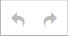
Annulla e Ripristina: premendo su questo pulsante si potrà annullare l'ultima operazione eseguita nel testo e quindi ripristinare lo stato precedente. Quindi se si commette un errore nella formattazione, nell'insermento di un'immagine o in qualsiasi altra operazione, basterà premere una o più volte sul pulsante Annulla per ritornare allo stato precedente l'errore.
Il pulsante Ripristina funziona nel verso opposto. Se ci si accorge di aver premuto sul bottone Annulla una volta di troppo, basterà premere su Ripristina per tornare allo stato precedente all'annullamento.
- Freccia indietro: annulla l'ultima modifica
- Freccia avanti: ripristina l'ultima modifica annullata
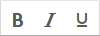
Formattazione testo: questi pulsanti permettono di formattare il testo selezionato, rispettivamente in:
- grassetto
- italico
- sottolineato
Selezionare il testo che si desidera modificare e premere il rispettivo pulsante. Per rimuovere la formattazione si dovrà riselezionare il testo e premere nuovamente il pulsante corrispondente alla formattazione da eliminare.
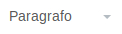
Formato: applica un formato preimpostato al paragrafo. Il formato verrà applicato all'intero paragrafo su cui si trova il cursore.
Si consiglia vivamente di utilizzare lo strumento "Formato" per creare il titolo, l'eventuale sottotitolo e/o occhiello, i paragrafi e le altre sezioni del testo, e di evitare l'utilizzo di "Formattazione testo". In questo modo il testo seguirà sempre la grafica e lo stile generale del sito. Gli articoli e le pagine scritte con l'editor saranno sempre formattate e organizzate in modo ottimale e visualmente armoniche con le impostazioni ed il layout del portale Web.
Cliccare sul menù a tendina e scegliere l'aspetto desiderato, e inserire quindi il testo; oppure, selezionare il testo e scegliere l'aspetto per modificare del testo già inserito.
Allineamento testo: permette di allineare il testo selezionato nei seguenti modi:
- a destra: allinea il testo al lato destro della pagina
- centrato: allinea il testo al centro
- a sinistra: allinea il testo al lato sinistro della pagina
- giustificato: allinea il testo su entrambi i lati della pagina variando l'interspazio tra le parole in modo da utilizzare
tutto lo spazio disponibile per ogni riga
Selezionare la sezione di testo che si desidera modificare e premere il rispettivo pulsante. Per rimuovere la formattazione si dovrà riselezionare il testo e premere nuovamente il pulsante corrispondente alla formattazione da eliminare.
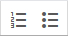
Elenco puntato e Elenco numerato: permettono di creare un elenco.
Elenco puntato:
- primo elemento della lista
- secondo elemento della lista
- terzo elemento della lista
Elenco numerato:
- primo elemento della lista numerata
- secondo elemento della lista numerata
- terzo elemento della lista numerata
Per aggiungere un nuovo punto all'elenco basterà premere il tasto della tastiera Enter (Invio), l'editor andrà a capo e creerà un ulteriore punto alla lista.
Per terminare l'elenco, premere nuovamente il tasto Enter.
Per togliere l'elenco dal testo selezionato basterà cliccare nuovamente sul pulsante relativo all'elenco precedentemente inserito.
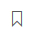
Collegamento a pagina: permette di inserire un collegamento che fa riferimento ad una pagina interna del portale comunale. Una volta premuto il pulsante, apparirà una nuova finestra contentente un campo di ricerca ed una lista delle pagine precedentemente create.
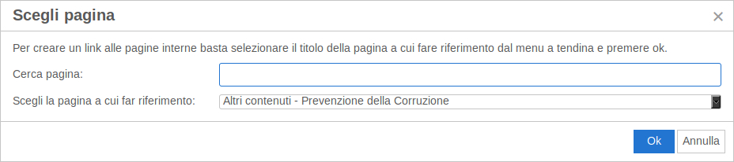
Per inserire il collegamento alla pagina desiderata basterà selezionare la pagina dalla lista e cliccare sul tasto "OK". Per cercare una pagina specifica all'interno della lista sarà sufficiente scrivere parte del titolo nel campo cerca.
Per modificare o eliminare il collegamento inserito, vedi "Inserisci/modifica collegamento".
Inserisci file o immagine: tramite questo pulsante è possibile inserire un file o un immagine scegliendolo da quelli già caricati sul sito, o caricandone uno nuovo dal proprio computer. Una volta premuto il pulsante, apparirà una nuova finestra da cui sarà possibile cercare i file.
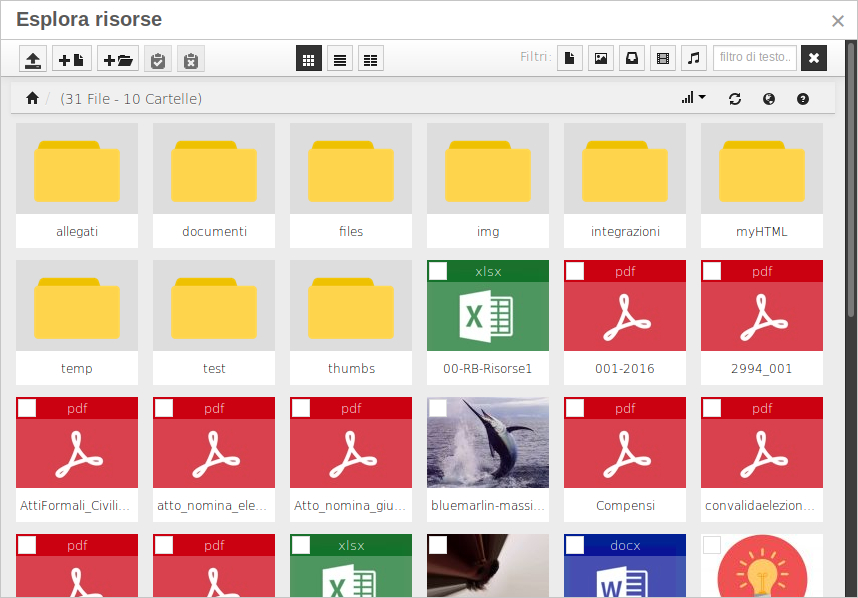
Per inserire un collegamento a un file o un'immagine sarà sufficiente cliccare sul file o sull'immagine desiderata.
Per caricare un file dal proprio computer, utilizzare il tasto (carica). Una volta premuto verrà visualizzata la pagina di caricamento. Cliccando sul tasto "Aggiungi file" sarà possibile scegliere i file da caricare.
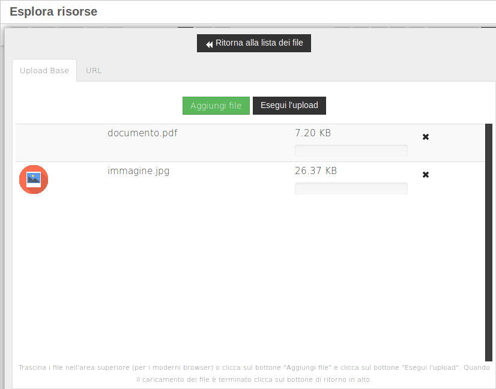
Una volta caricati i file, cliccare su "Esegui l'upload" e successivamente su "Ritorna alla lista dei file".
Per modificare o eliminare il collegamento inserito, vedi "Inserisci/modifica collegamento".
Per modificare o eliminare l'immagine inserita, vedi "Inserisci/modifica immagine".
Crea una sezione espandibile: permette di inserire una sezione espandibile. Le sezioni così create avranno un titolo cliccabile indicato da una freccia che punta verso il basso (▼), e verranno evidenziate con uno sfondo grigio ed una linea tratteggiata. Quando verrà visualizzata la pagina saranno visibili solamente i titoli, e cliccando sul titolo sarà possibile mostrare o nascondere il testo contenuto nella sezione.
Il primo elemento della sezione sarà utilizzato come titolo.
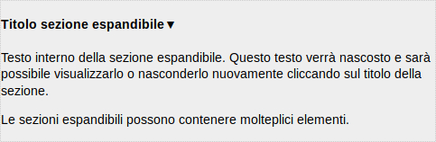
Selezionare il testo che si desidera trasformare in sezione espandibile e premere il rispettivo pulsante. Per rimuovere la sezione espandibile sarà sufficiente cliccare sulla sezione e premere nuovamente il pulsante.
Inserisci/modifica collegamento (per utenti esperti): permette di inserire un collegamento ad una pagina web.
Una volta premuto il primo pulsante, raffigurante una catena, apparirà una nuova finestra contenente diversi campi da compilare:
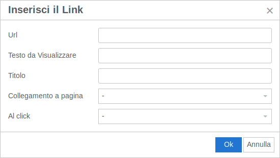
- Url: l'indirizzo della pagina web da collegare
- Testo da visualizzare: il testo che verrà visualizzato e al click porterà alla pagina collegata
- Titolo: il titolo del collegamento, che comparirà quando il cursore del mouse è posizionato sopra il collegamento
- Collegamento a pagina: la pagina da collegare (vedi Collegamento a pagina)
- Al click: l'azione da intraprendere quando si clicca sul collegamento. Se non viene selezionato nulla, il collegamento si aprirà nella stessa finestra, altrimenti scegliendo "apri in nuova finestra" il collegamento verrà aperto in una nuova finestra del browser.
Cliccando su un collegamento e poi sul pulsante "inserisci/modifica collegamento" sarà possibile modificare le opzioni del collegamento.
Elimina collegamento: permette di eliminare un collegamento. Il pulsante di eliminazione collegamento è il secondo, raffigurante una catena spezzata.
Cliccando su un collegamento e poi sul pulsante "elimina collegamento" il collegamento verrà eliminato

Inserisci/modifica immagine (per utenti esperti): permette di inserire o di modificare un'immagine precedentemente inserita.
Una volta premuto il pulsante pparirà una nuova finestra contenente diversi campi da compilare:
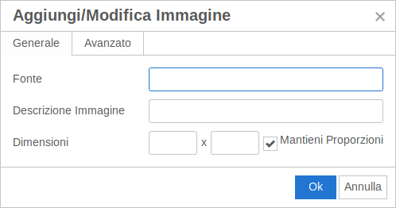
- Fonte: l'indirizzo web dell'immagine da inserire
- Descrizione immagine: il testo che verrà visualizzato quando il cursore del mouse è posizionato sopra l'immagine, o al posto dell'immagine nel caso in cui l'immagine non sia disponibile.
- Dimensioni: altezza x larghezza dell'immagine, in pixel o in percentuale. L'opzione mantieni proporzioni evita che l'immagine venga deformata quando viene ridimensionata.
Per inserire facilmente le immagini si consiglia di utilizzare lo strumento "Inserisci file o immagine" e di utilizzare lo strumento "Inserisci/modifica immagine" solo per apportare eventuali modifiche all'immagine inserita.
Cliccando su un collegamento e poi sul pulsante "inserisci/modifica immagine" sarà possibile modificare la descrizione e le dimensioni dell'immagine inserita.
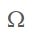
Inserisci carattere speciale: permette di inserire un carattere speciale nel testo selezionandolo da una tabella.
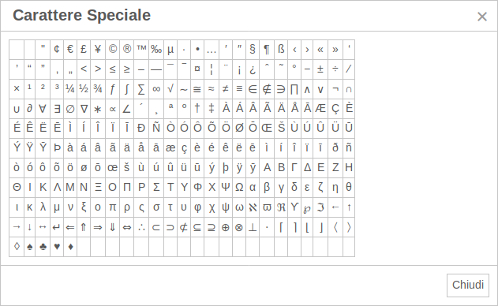
Per aggiungere un elemento speciale all'interno del documento è sufficiente selezionarlo dalla tabella; essa si chiuderà automaticamente inserendo il nuovo carattere nella posizione del cursore di scrittura.